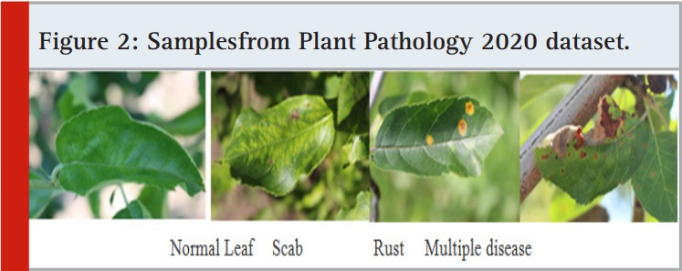

Early-Stage Apple Leaf Disease Prediction Model

Project information
Premature leaf fall, scab, Alternaria leaf spot, brown spot, mosaic, grey spot, and rust are common types of apple leaf diseases. Due to the arrival of monsoon, there is excess moisture in the air because of an outbreak of diseases in plants that is being witnessed in the hilly region. Farmers from these regions are always worried about the health of Apple plants. The scientists working in various departments, KrishiVigyanKendra’s, and regional research stations have given the required inputs to control the problems but that is not useful to identify the problem in the early stage. Also, the current disease diagnosis based on human scouting is time-consuming and expensive. Our proposed system identifies various apple leaf diseases in an early stage that will alert the farmers and nearby research institutes to take appropriate action to control it.
The dataset contains 1821 images of apple leaves which has normal leaves, scab, rust, and other disease infected leaves. The proposed regional convolutional neural network-based approach is capable of localizing and classifying the disease with 90% accuracy.
Problem Statement
Agriculture plays an important role in the economy of every country. Produce produced by farmers must be in a proper condition to achieve expected profit. Advancements in technology must be used in this domain to save and make products market ready. But due to continuous change in weather and lack of technology access in this field, farmers are facing a huge challenge to protect their produce from different diseases that are unexpected and occurred at any time.
Proposed methodology
The proposed method is based on Mask-RCNN (Regional Convolutional Neural Network). Mask RCNN is an extension of faster RCNN. RCNN is an object detection algorithm which is also used for image segmentation and masking. It is a pixel level classification that determines which all pixels belong to which object. The Mask-RCNN architecture is divided into three parts. First pretrained model of CNN, second Region Proposal Network(RPN) and last is fully connected layer and output. Backbone to this algorithm is ResNet50 which is used to extract the features of images. Detailed pipeline of proposed method is shown in figure 1, below.

Initially we have used weights of pre trained model trained on plant pathology 2020 dataset. Last layer of this pretrained model architecture is a fully connected layer that has a softmax activation function. Feature maps from this model is used as an input to the Region Proposal network.
Region Proposal network:
Region proposal is an area where objects can possibly be found. It uses CNN to find regions of interest using binary classifiers. CNN layers of Regressor plot bounding box around possible objects and later by finding Intersection over Union we can decide which boxes possibly contain regions of interest. Region of Interest (ROI) can be calculated by dividing area of intersection by area of union.Once regions of interest get finalized, the next step is to have ROI Pooling.
This step gets input from CNN as a feature map and Region of interests from regressor. ROI pooling is used to extract fixed size windows from feature maps that is helpful to extract labels as a final output. It will produce fixed size feature map from different size regions using max pooling and the size of max pool window will be of 7*7*512.
Experimental Setup Dataset:
The Plant Pathology 2020 dataset is publicly available sponsored by The Cornell Initiative for Digital Agriculture and FGVC7.It has 1821 leaf images. It contains 4 classes: healthy (516 images), multiple_ diseases (91 images), rust (622 images), scab (592 images). Figure 2 shows sample images from Plant Pathology 2020 dataset.
Image Annotation:
We have used VGG image Annotator to annotate each image manually. Using this tool, we obtained annotation in .json file for train and test dataset. We have kept this file in the train and test folder respectively.
Train the ResNet50 CNN for feature maps:
We have trained ResNet50 CNN algorithms on The Plant Pathology 2020 dataset. We have considered feature maps of the images. Images have been resized to 224x224x3 and then divided into two parts: train and test. Train data contains 80% of overall images and the rest all are in test data. To fit the data properly we normalized the image pixel values. To reduce overfitting and to improve the overall performance of the model image augmentation has been used which will help to generalize the model. During the training phase we have used Adam optimizer with 0.001 learning rate, categorical cross entropy loss function and batch size as 10. After training we have saved weights of the model in .h5 format so that it can be used to train Mask-RCNN.
Training of Mask-RCNN:
During the training phase of Mask RCNN proposed methodology uses ResNet50 as a backbone as it takes less time than ResNet101 or ResNext101 due to less numbers of layers. Detection minimum confidence set to 0.90. Remaining all other parameters are kept as default to train the model.
The Results of Mask-RCNN:
As the results shown in fig algorithm performs well and can predict the disease accurately. It annotates the object (disease patches) correctly with confidence.